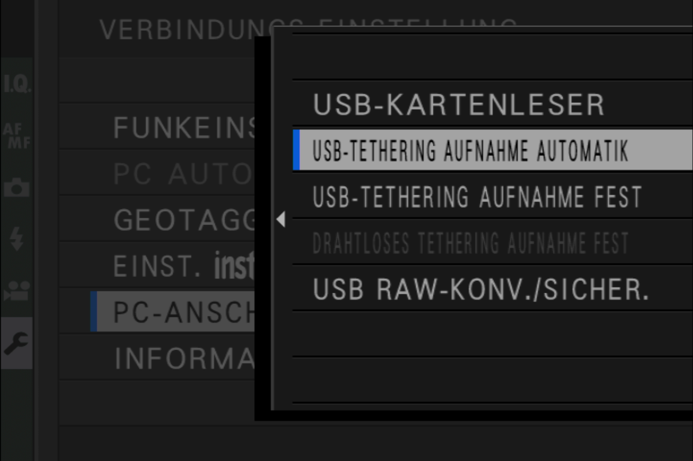
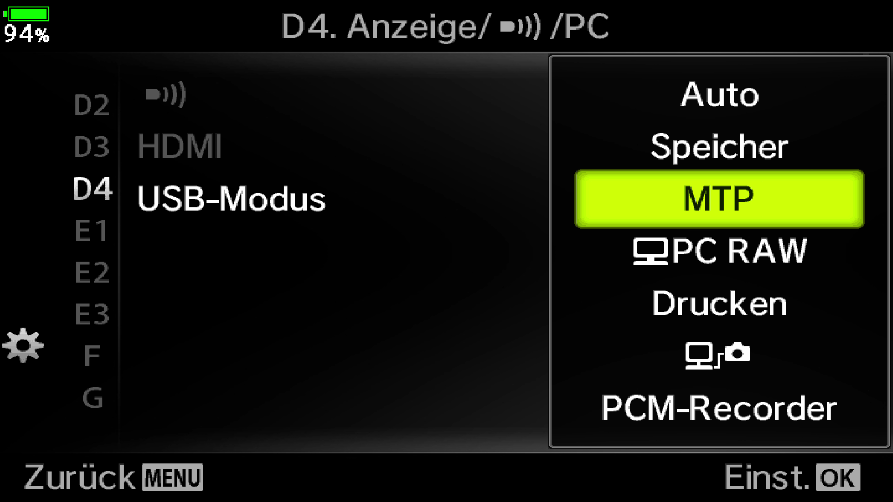
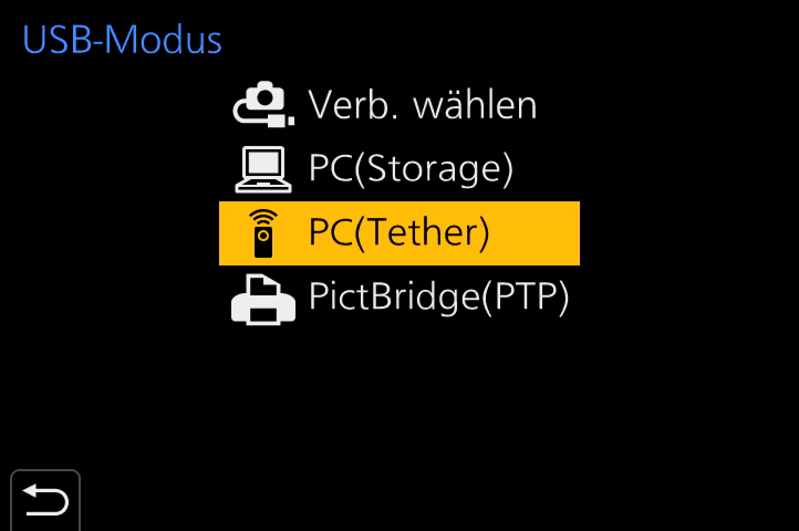
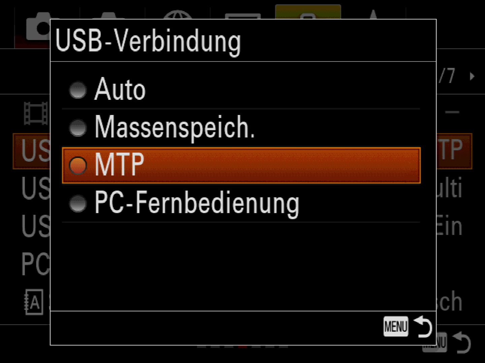

Wenn Sie iOS 13.2 oder höher verwenden, unterstützt Cascable das Importieren von Bildern von jeder PTP / MTP-kompatiblen Kamera, die über USB mit Ihrem iPhone, iPad oder iPod touch verbunden ist.
Sobald Ihre Kamera richtig konfiguriert und angeschlossen ist, sollte Cascable sie innerhalb weniger Sekunden erkennen und eine Verbindung herstellen.
Wenn Sie Ihre Kamera an Ihr iOS-Gerät anschließen, muss sie sich im PTP-, MTP-, PictBridge-, oder Tethering- Modus befinden, damit Cascable es als kabelgebundene Kamera erkennen kann.
Bei einigen Kameras werden Sie gefragt, welchen USB-Modus Sie beim Anschließen verwenden sollen, bei anderen müssen Sie die Einstellungen für den USB-Modus in den Menüs manuell ändern. Wenn Ihre Kamera diese Einstellung nicht hat (die meisten Canon- und Nikon-Modelle nicht), unterstützen sie normalerweise nur den PTP / MTP-Modus, der für Cascable der richtige Modus ist.
Im Folgenden finden Sie Screenshots der Einstellungen verschiedener Kameras. Ausführliche Anweisungen finden Sie im Handbuch Ihrer Kamera.

Fujifilm

Olympus

Pansonic

Sony
Wie Sie Ihre Kamera physisch an Ihr iOS-Gerät anschließen, hängt sowohl vom Anschluss Ihrer Kamera als auch vom Anschluss Ihres iOS-Geräts ab. Einige gängige Beispiele finden Sie unten.
Wenn Sie ein iPad mit USB-C haben, können Sie Ihre Kamera entweder direkt mit einem USB-C-Kabel verbinden, wenn die Kamera auch über USB-C verfügt, oder über einen USB-C-zu-USB-A-Adapter (weiblich) und das entsprechende Kabel kam mit Ihrer Kamera, wenn nicht. Apple verkauft einen USB-C-zu-USB-A-Adapter (weiblich), aber jeder hochwertige, standardkonforme Adapter sollte funktionieren.
Wenn Ihr iOS-Gerät über einen Lightning-Anschluss verfügt, müssen Sie einen Lightning-zu-USB-A-Adapter (weiblich) und dann das mit Ihrer Kamera gelieferte Kabel verwenden. Der Apple Lightning-zu-USB-Kameraadapter ist ein solcher Adapter, und es gibt Alternativen von Drittanbietern.
Wenn Ihre Kamera mit einem USB-C-zu-USB-C-Kabel geliefert wurde, können Sie ein USB-A-zu-USB-C-Kabel bei vielen renommierten Elektronikhändlern erwerben.